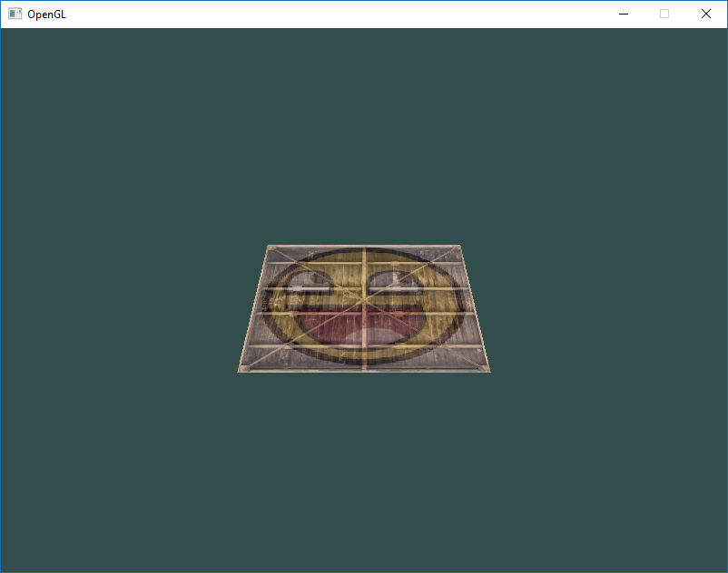
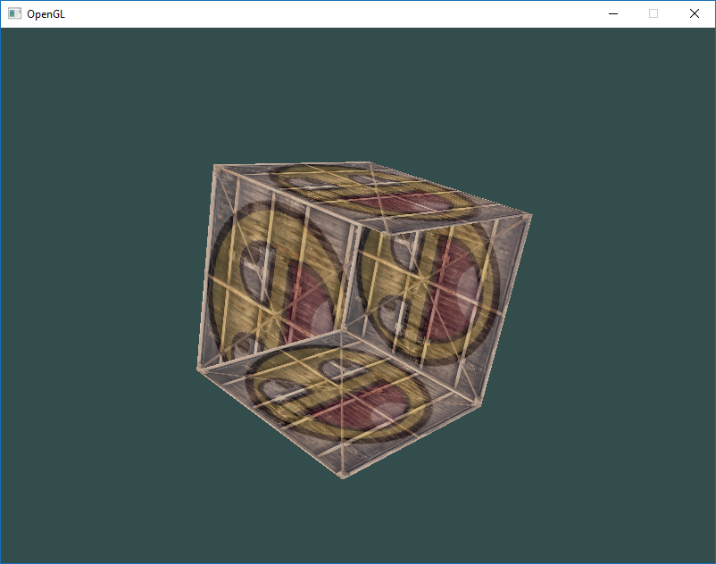
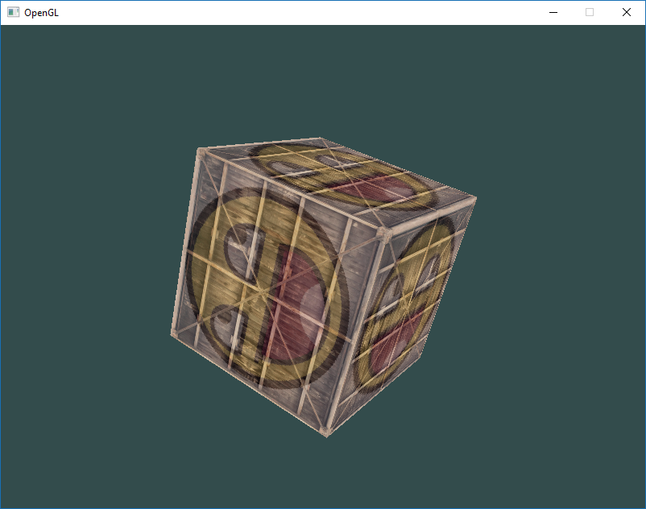
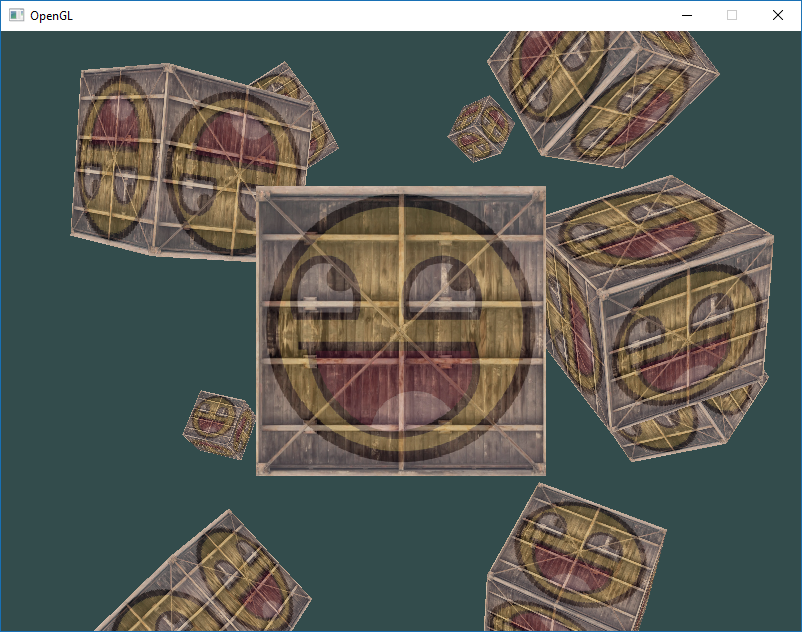

Coordinate Systems
Computer Graphics - OpenGL
Coordinate Systems
Normalized Device Coordinates
- OpenGL expects all vertices to be in normalized device coordinates after each vertex shader run
- The x, y and z coordinates of each vertex should be between -1.0 and 1.0
- Coordinates outside this range will not be visible
- We specify coordinates in our own range and transform them to NDC in the vertex shader
- NDC coordinates are then given to the rasterizer to transform them to 2D coordinates/pixels on your screen
Coordinate System Pipeline
- Transforming coordinates to NDC and then to screen coordinates is accomplished step-by-step
- We transform vertices to several coordinate systems before finally transforming them to screen coordinates
- Advantage: Some operations/calculations are easier in certain coordinate systems

Five Coordinate Systems
There are 5 different coordinate systems that are important to us:
- Local space (or Object space)
- World space
- View space (or Eye space)
- Clip space
- Screen space
The Global Picture
Transformation Matrices
- To transform coordinates between spaces we use several transformation matrices
- Most important are the model, view and projection matrices
- Vertex coordinates start in local space as local coordinates
- Then processed to world coordinates, view coordinates, clip coordinates
- Eventually end up as screen coordinates
Coordinate System Flow

1. Local Coordinates
Local coordinates are the coordinates of your object relative to its local origin - they’re the coordinates your object begins in.
2. World Coordinates
Transform local coordinates to world-space coordinates - coordinates relative to a global origin of the world, together with many other objects also placed relative to the world’s origin.
3. View Coordinates
Transform world coordinates to view-space coordinates - each coordinate as seen from the camera or viewer’s point of view.
4. Clip Coordinates
After view space, project coordinates to clip coordinates. Clip coordinates are processed to the -1.0 and 1.0 range and determine which vertices will end up on the screen.
5. Screen Coordinates
Transform clip coordinates to screen coordinates via viewport transform that transforms from -1.0 and 1.0 to the coordinate range defined by glViewport. The resulting coordinates are sent to the rasterizer to turn them into fragments.
Why Different Spaces?
- Each space has its purpose and advantages
- Some operations make more sense in certain coordinate systems
- Modifying objects: Most sensible in local space
- Object interactions: Makes sense in world coordinates
- Camera operations: Natural in view space
- We could define one transformation matrix from local to clip space, but that leaves us with less flexibility
Local Space
Understanding Local Space
- Local space is the coordinate space that is local to your object
- Where your object begins in
- Imagine creating a cube in modeling software (Maya, Blender)
- The origin of your cube is probably at (0,0,0)
- Even though your cube might end up at a different location in your final application
- All models you’ve created have (0,0,0) as their initial position
- All vertices of your model are therefore in local space: they are all local to your object
World Space
Positioning Objects in the World
- If we import all objects directly, they’d be stacked at the world’s origin (0,0,0)
- Not what we want!
- We want to define a position for each object to position them inside a larger world
- World space coordinates are the coordinates of all vertices relative to a (game) world
The Model Matrix
- This is where you want your objects scattered around the place (preferably realistically)
- Coordinates are transformed from local to world space
- Accomplished with the model matrix
- The model matrix is a transformation matrix that translates, scales and/or rotates your object
- Places objects in the world at a location/orientation they belong to
View Space
The Camera Space
- View space is what people usually refer to as the camera of OpenGL
- Sometimes known as camera space or eye space
- Result of transforming world-space coordinates to coordinates in front of the user’s view
- The space as seen from the camera’s point of view
- Accomplished with combinations of translations and rotations
- Translate/rotate the scene so certain items are transformed to the front of the camera
- These combined transformations are stored in a view matrix
Clip Space
Understanding Clipping
- At the end of each vertex shader run, OpenGL expects coordinates within a specific range
- Any coordinate that falls outside this range is clipped
- Clipped coordinates are discarded
- Remaining coordinates end up as fragments visible on your screen
- This is where clip space gets its name
Projection Matrix
- Specifying all visible coordinates between -1.0 and 1.0 isn’t intuitive
- We specify our own coordinate set and convert to NDC
- To transform from view to clip-space we define a projection matrix
- Specifies a range of coordinates (e.g., -1000 to 1000 in each dimension)
- Projection matrix transforms coordinates within this range to NDC (-1.0, 1.0)
- All coordinates outside this range won’t be mapped and therefore be clipped
Clipping Example
- With projection matrix range specified, a coordinate of (1250, 500, 750) would not be visible
- The x coordinate is out of range
- Gets converted to coordinate higher than 1.0 in NDC
- Therefore clipped
Note
If only part of a primitive (e.g., a triangle) is outside the clipping volume, OpenGL will reconstruct the triangle as one or more triangles to fit inside the clipping range.
Frustum and Perspective Division
- The viewing box a projection matrix creates is called a frustum
- Each coordinate inside this frustum will end up on the user’s screen
- Converting coordinates within a specified range to NDC is called projection
- The projection matrix projects 3D coordinates to easy-to-map-to-2D normalized device coordinates
Perspective Division
- Once all vertices are transformed to clip space, perspective division is performed
- We divide x, y and z components by the vector’s homogeneous w component
- Perspective division transforms 4D clip space coordinates to 3D normalized device coordinates
- This step is performed automatically at the end of each vertex shader run
After Perspective Division
- After this stage, resulting coordinates are mapped to screen coordinates
- Uses the settings of
glViewport - Turned into fragments
- The projection matrix can take two different forms
- Each form defines its own unique frustum
- We can create an orthographic projection matrix or a perspective projection matrix
Orthographic Projection
The Orthographic Frustum

How Orthographic Projection Works
- Defines a cube-like frustum box that defines the clipping space
- Each vertex outside this box is clipped
- When creating an orthographic projection matrix we specify the width, height and length of the visible frustum
- All coordinates inside this frustum after transformation won’t be clipped
Orthographic Properties
- The frustum is defined by width, height, near and far planes
- Any coordinate in front of the near plane is clipped
- Same applies to coordinates behind the far plane
- Orthographic frustum directly maps all coordinates to NDC
- The w component of each vector is untouched
- If w = 1.0, perspective division doesn’t change the coordinates
Creating an Orthographic Matrix
- First two parameters: left and right coordinate of the frustum
- Third and fourth: bottom and top part of the frustum
- These 4 points define the size of the near and far planes
- Fifth and sixth: distances between the near and far plane
- This matrix transforms all coordinates between these x, y and z values to NDC
Perspective Projection
Real-Life Perspective

Understanding Perspective
- In real life, objects farther away appear much smaller
- This weird effect is something we call perspective
- Especially noticeable looking down an infinite motorway or railway
- Due to perspective, lines seem to coincide the farther they’re away
Perspective Projection Matrix
- Perspective projection tries to mimic this effect
- Uses a perspective projection matrix
- Maps a given frustum range to clip space
- Manipulates the w value of each vertex coordinate
- The further away a vertex is from the viewer, the higher the w component becomes
Perspective Division in Action
- Once coordinates are transformed to clip space, they’re in range -w to w
- Anything outside this range is clipped
- OpenGL requires visible coordinates between -1.0 and 1.0 as final vertex shader output
- Once in clip space, perspective division is applied:
\[out = \begin{pmatrix} \frac{x}{w} \\ \frac{y}{w} \\ \frac{z}{w} \end{pmatrix}\]
Effects of Perspective Division
- Each component of vertex coordinate is divided by its w component
- Gives smaller vertex coordinates the further away a vertex is
- Another reason why the w component is important
- Helps us with perspective projection
- Resulting coordinates are in normalized device space
Creating a Perspective Matrix
glm::perspective creates a large frustum that defines the visible space - anything outside the frustum won’t end up in the clip space volume and will be clipped.
The Perspective Frustum
A perspective frustum is a non-uniformly shaped box where each coordinate inside will be mapped to a point in clip space:

Perspective Parameters
- First parameter:
fovvalue (field of view) - sets how large the viewspace is - Usually set to 45 degrees for realistic view (higher for doom-style results)
- Second parameter: aspect ratio - viewport width divided by height
- Third and fourth: near and far plane of the frustum
- Usually near = 0.1f and far = 100.0f
- All vertices between near and far plane inside the frustum will be rendered
Orthographic vs Perspective
- Orthographic: Each vertex coordinate directly mapped to clip space
- Still does perspective division but w stays 1 - no effect
- Objects farther away don’t seem smaller - weird visual output
- Mainly used for 2D renderings and architectural/engineering applications
- Used in 3D modeling (Blender) for accurate object dimensions
Visual Comparison

Putting It All Together
The Complete Transformation
We create a transformation matrix for each step: model, view and projection matrix.
A vertex coordinate is transformed to clip coordinates as follows:
\[V_{clip} = M_{projection} \cdot M_{view} \cdot M_{model} \cdot V_{local}\]
Note
The order of matrix multiplication is reversed - read matrix multiplication from right to left!
The resulting vertex should be assigned to gl_Position in the vertex shader. OpenGL will then automatically perform perspective division and clipping.
Hands On!
Creating the Model Matrix
- Now we can transform 3D coordinates to 2D coordinates
- Start showing objects as real 3D objects instead of a lame 2D plane
- First create a model matrix
- Consists of translations, scaling and/or rotations to transform all object’s vertices to global world space
- Let’s transform our plane by rotating it on the x-axis so it looks like it’s laying on the floor
Model Matrix Code
- By multiplying vertex coordinates with this model matrix we’re transforming to world coordinates
- Our plane slightly on the floor represents the plane in the global world
Creating the View Matrix
We need to create a view matrix. We want to move slightly backwards in the scene so the object becomes visible:
- To move a camera backwards is the same as moving the entire scene forward
- That’s exactly what a view matrix does
- We move the entire scene around inversed to where we want the camera to move
Moving Backwards
- We want to move backwards
- OpenGL is a right-handed system
- We have to move in the positive z-axis
- We do this by translating the scene towards the negative z-axis
- This gives the impression that we are moving backwards
Right-Handed System
Understanding Coordinate Handedness
- By convention, OpenGL is a right-handed system
- Positive x-axis is to your right
- Positive y-axis is up
- Positive z-axis is backwards
- Think of your screen being the center of the 3 axes
- Positive z-axis going through your screen towards you

The Right-Hand Rule
To understand why it’s called right-handed:
- Stretch your right-arm along the positive y-axis with your hand up top
- Let your thumb point to the right
- Let your pointing finger point up
- Now bend your middle finger downwards 90 degrees
Your thumb points towards positive x-axis, pointing finger towards positive y-axis, and middle finger towards positive z-axis.
Left vs Right Handed
- If you do this with your left-arm, the z-axis is reversed
- This is known as a left-handed system
- Commonly used by DirectX
- Note: In NDC, OpenGL actually uses a left-handed system (projection matrix switches handedness)
Complete Transformation Setup
glm::mat4 model(1.0f);
model = glm::rotate(model, glm::radians(-55.0f), glm::vec3(1.0, 0.0, 0.0));
glm::mat4 view = glm::mat4(1.0f);
// note that we're translating the scene in the reverse direction of where we want to move
view = glm::translate(view, glm::vec3(0.0f, 0.0f, -3.0f));
glm::mat4 projection;
projection = glm::perspective(glm::radians(45.0f),
screenWidth / screenHeight, 0.1f, 100.0f);Updated Vertex Shader
Passing Matrices to Shader
glm::mat4 model(1.0f);
model = glm::rotate(model, glm::radians(-55.0f), glm::vec3(1.0, 0.0, 0.0));
glm::mat4 view = glm::mat4(1.0f);
view = glm::translate(view, glm::vec3(0.0f, 0.0f, -3.0f));
glm::mat4 projection;
projection = glm::perspective(glm::radians(45.0f),
screenWidth / screenHeight, 0.1f, 100.0f);
GLuint modelLocation = glGetUniformLocation(shaderProgram, "model");
glUniformMatrix4fv(modelLocation, 1, GL_FALSE, glm::value_ptr(model));
GLuint viewLocation = glGetUniformLocation(shaderProgram, "view");
glUniformMatrix4fv(viewLocation, 1, GL_FALSE, glm::value_ptr(view));
GLuint projectionLocation = glGetUniformLocation(shaderProgram, "projection");
glUniformMatrix4fv(projectionLocation, 1, GL_FALSE, glm::value_ptr(projection));Result: Projected Rectangle
Drawing a Cube
Cube Vertices
Let’s extend our 2D plane to a 3D cube. To render a cube we need 36 vertices: 6 faces × 2 triangles × 3 vertices each:
float vertices[] = {
-0.5f, -0.5f, -0.5f, 0.0f, 0.0f,
0.5f, -0.5f, -0.5f, 1.0f, 0.0f,
0.5f, 0.5f, -0.5f, 1.0f, 1.0f,
0.5f, 0.5f, -0.5f, 1.0f, 1.0f,
-0.5f, 0.5f, -0.5f, 0.0f, 1.0f,
-0.5f, -0.5f, -0.5f, 0.0f, 0.0f,
-0.5f, -0.5f, 0.5f, 0.0f, 0.0f,
0.5f, -0.5f, 0.5f, 1.0f, 0.0f,
0.5f, 0.5f, 0.5f, 1.0f, 1.0f,
0.5f, 0.5f, 0.5f, 1.0f, 1.0f,
-0.5f, 0.5f, 0.5f, 0.0f, 1.0f,
-0.5f, -0.5f, 0.5f, 0.0f, 0.0f,
-0.5f, 0.5f, 0.5f, 1.0f, 0.0f,
-0.5f, 0.5f, -0.5f, 1.0f, 1.0f,
-0.5f, -0.5f, -0.5f, 0.0f, 1.0f,
-0.5f, -0.5f, -0.5f, 0.0f, 1.0f,
-0.5f, -0.5f, 0.5f, 0.0f, 0.0f,
-0.5f, 0.5f, 0.5f, 1.0f, 0.0f,
0.5f, 0.5f, 0.5f, 1.0f, 0.0f,
0.5f, 0.5f, -0.5f, 1.0f, 1.0f,
0.5f, -0.5f, -0.5f, 0.0f, 1.0f,
0.5f, -0.5f, -0.5f, 0.0f, 1.0f,
0.5f, -0.5f, 0.5f, 0.0f, 0.0f,
0.5f, 0.5f, 0.5f, 1.0f, 0.0f,
-0.5f, -0.5f, -0.5f, 0.0f, 1.0f,
0.5f, -0.5f, -0.5f, 1.0f, 1.0f,
0.5f, -0.5f, 0.5f, 1.0f, 0.0f,
0.5f, -0.5f, 0.5f, 1.0f, 0.0f,
-0.5f, -0.5f, 0.5f, 0.0f, 0.0f,
-0.5f, -0.5f, -0.5f, 0.0f, 1.0f,
-0.5f, 0.5f, -0.5f, 0.0f, 1.0f,
0.5f, 0.5f, -0.5f, 1.0f, 1.0f,
0.5f, 0.5f, 0.5f, 1.0f, 0.0f,
0.5f, 0.5f, 0.5f, 1.0f, 0.0f,
-0.5f, 0.5f, 0.5f, 0.0f, 0.0f,
-0.5f, 0.5f, -0.5f, 0.0f, 1.0f
};Updated Attribute Configuration
GLint posAttrib = glGetAttribLocation(shaderProgram, "position");
glEnableVertexAttribArray(posAttrib);
glVertexAttribPointer(posAttrib, 3, GL_FLOAT, GL_FALSE,
5 * sizeof(float), (void*)0);
GLint texCoordAttrib = glGetAttribLocation(shaderProgram, "texCoord");
glEnableVertexAttribArray(texCoordAttrib);
glVertexAttribPointer(texCoordAttrib, 2, GL_FLOAT, GL_FALSE,
5 * sizeof(float), (void*)(3 * sizeof(float)));Draw the cube:
Static Cube Result

Rotating the Cube
Animation with SDL3
The Z-Fighting Problem
- Some sides of the cube are being drawn over other sides
- OpenGL draws your cube triangle-by-triangle
- Will overwrite pixels even though something else might’ve been drawn there before
- Some triangles are drawn on top of each other while they shouldn’t overlap
Solution: Depth Testing
OpenGL stores depth information in a buffer called the z-buffer that allows OpenGL to decide when to draw over a pixel and when not to. Using the z-buffer we can configure OpenGL to do depth-testing.
Z-Buffer
Enabling Depth Testing
- Depth testing is disabled by default
- We can enable it using
glEnable - The
glEnableandglDisablefunctions enable/disable functionality in OpenGL - That functionality remains enabled/disabled until another call changes it
Clearing the Depth Buffer
- Since we’re using a depth buffer, we need to clear it before each render iteration
- Otherwise depth information from previous frame stays in the buffer
- Just like clearing the color buffer, clear the depth buffer by specifying the
DEPTH_BUFFER_BITbit
Depth Testing Enabled
More Cubes!
Drawing Multiple Cubes
- Say we want to display 10 cubes on screen
- Each cube looks the same but differs in location and rotation
- The graphical layout is already defined
- Don’t need to change buffers or attribute arrays
- Only thing to change for each object is its model matrix
Cube Positions Array
Define a translation vector for each cube that specifies its position in world space:
glm::vec3 cubePositions[] = {
glm::vec3( 0.0f, 0.0f, 0.0f),
glm::vec3( 2.0f, 5.0f, -15.0f),
glm::vec3(-1.5f, -2.2f, -2.5f),
glm::vec3(-3.8f, -2.0f, -12.3f),
glm::vec3( 2.4f, -0.4f, -3.5f),
glm::vec3(-1.7f, 3.0f, -7.5f),
glm::vec3( 1.3f, -2.0f, -2.5f),
glm::vec3( 1.5f, 2.0f, -2.5f),
glm::vec3( 1.5f, 0.2f, -1.5f),
glm::vec3(-1.3f, 1.0f, -1.5f)
};Rendering Loop for Multiple Cubes
Within the game loop, call glDrawArrays 10 times with different model matrices:
for (unsigned int i = 0; i < 10; ++i)
{
glm::mat4 model(1.0f);
model = glm::translate(model, cubePositions[i]);
float angle = 20.0f * i;
model = glm::rotate(model, glm::radians(angle),
glm::vec3(1.0f, 0.3f, 0.5f));
glUniformMatrix4fv(modelLocation, 1, GL_FALSE,
glm::value_ptr(model));
glDrawArrays(GL_TRIANGLES, 0, 36);
}Final Result: Multiple Cubes
Summary
What We’ve Learned
- The 5 coordinate systems in OpenGL’s pipeline
- Local, World, View, Clip, and Screen spaces
- How transformation matrices move coordinates between spaces
- Orthographic vs Perspective projection
- The right-handed coordinate system
- Depth testing with the Z-buffer
- Rendering multiple objects with different transformations
Key Concepts
Important
Remember:
- Each coordinate system serves a specific purpose
- Transformations happen in a specific order: Local → World → View → Clip → Screen
- Perspective division happens automatically after the vertex shader
- Always enable depth testing for 3D scenes
- Use the model matrix to position multiple instances of the same object
Next Steps
Coming Up:
- Camera systems and controls
- Texturing and materials
- Lighting models
- Advanced transformations
Practice:
- Experiment with different projection matrices
- Create complex scenes with multiple objects
- Implement camera movement
- Try different coordinate transformations
Questions?
Thank you for exploring coordinate systems!
Understanding coordinate systems is fundamental to 3D graphics programming. Take time to experiment with different transformations and see how they affect your rendered scene.
Practice suggestion: Try creating a solar system with planets orbiting at different speeds and distances!

OpenGL Core Profile 3.3+